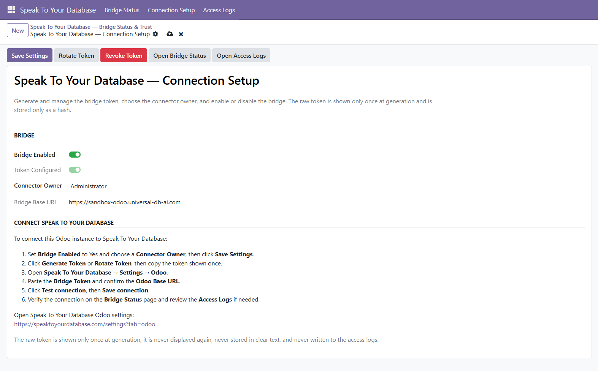
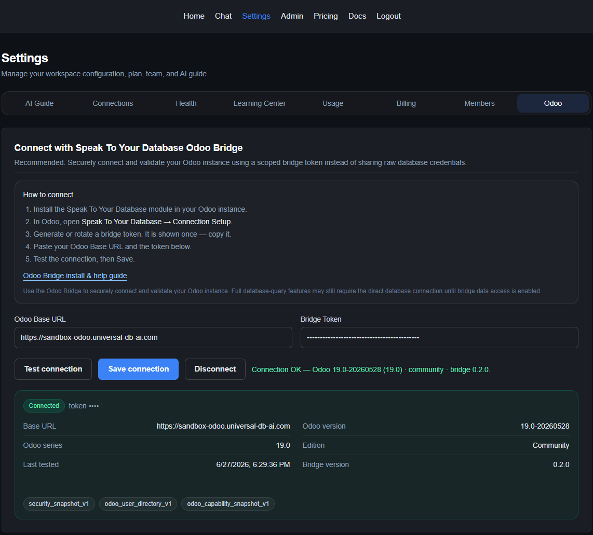

Product screenshots
See the Odoo Bridge setup, connection validation, live Odoo answers, and transparent calculation details.
Bridge connection setup
Enable the bridge, manage the token, and copy the secure setup details from Odoo.

Odoo Bridge connected in Speak To Your Database
Validate the bridge connection and confirm the Odoo version, edition, and bridge status.

Odoo answer with source and confidence
Ask plain-language business questions and see source, confidence, and verification.

How this answer was calculated
Review the Odoo model, record type, business filters, records matched, and safety assumptions behind the answer.